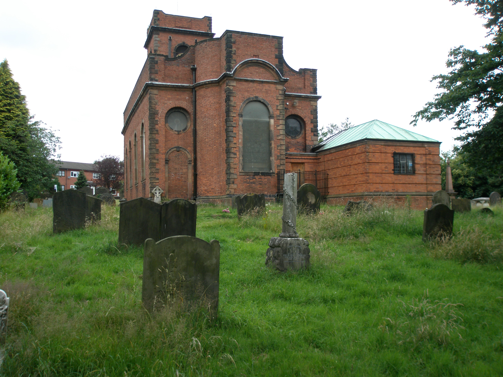

|  |
Here are some photographs taken in July 2008 of the Smethwick Old Church, Stafford. The church was initially consecrated in 1732 as a chapel of the parish of St. Peter's Church, Harborne and was built at the behest of Dorothy Parkes. In its earliest years it was referred to as Parke's Chapel, and only in 1842 was the Chapelry of Smethwick assigned an independent Ecclestial District. At the time the church was built there were not many people living in Smethwick. (A tax return in 1666 indicates there were only 49 people assessed for tax.) The completion of a canal through the town of Brindley in 1768-69 led to the erection of factories along its banks and a resulting influx of people that by the 1801 census had reached 1,097 inhabitants. Externally the building has not been the subject of any major architectural renovations (aside from the introduction of the clock), and as such, it appears largely as it would have during the eighteenth and nineteenth centuries. The back of Samuel Rudge's (1751-1817) tombstone is just left of center in the bottom right photograph, closest to the viewer. The writing appears on the other side. A 6 foot tall monument (not depicted) bearing inscriptions relating to several grandchildren and greatgrandchildren of Samuel by his namesake son Samuel (1783-1827) is located just a few feet to the left of Samuel sr.'s gravestone.